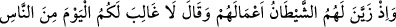
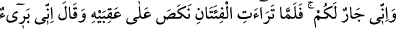
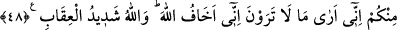
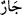

Allah Teâlâ’dan bizi din yolunda ayaklarımızın kaymasından muhafaza etmesini, her
söz ve amelde rızâsına erdirmesini niyaz ederiz. Yardımcı O’dur. Allah’ım Nebiyy-i
Emîn hürmetine duamızı kabul buyur!
48. O zaman şeytan onlara yaptıkları işi süsledi (güzel gösterdi) de, “Bugün
insanlardan size galip gelecek kimse yoktur, şüphesiz ben de sizin yanınızdayım.”
dedi. Fakat iki topluluk birbirini görünce ardına döndü ve “Ben sizden uzağım, ben
sizin görmediklerinizi görüyorum, ben Allah’tan korkarım, çünkü Allah’ın cezâsı
şiddetlidir.” dedi.
“O zaman şeytan onlara yaptıkları işi süsledi de,”
Rivayet edilmiştir ki, Kureyş Mekke’den çıkıp Benî Kinâne menzili civarına
ulaştıklarında, aralarında var olan eski durumdan dolayı endişeye kapıldılar ve geri
dönmek istediler. İblis, Kinâne’nin önderi Sürâha b. Mâlik sûretinde onlara geldi ve
şöyle dedi: Siz iyi koruyucularsınız, gidiniz, Kinâne oğullarından size zarar
gelmeyeceğini taahhüt ederim. Ayrıca ben Rufâka yolunu gözetlerim. İblis şeytanlardan
bir gurupla onlarla beraber Bedir’e yöneldi. Hak Teâlâ bu kıssayı haber veriyor.
Ey Muhammed, şeytanın müminlere düşmanlık ve diğer hususlarda Mekke kâfirlerine
yaptıkları davranışları süsleyip güzel gösterdiği zamanı hatırla. Sülemî, Hakâiku’t-
tefsir adlı eserinde buyurdu ki: Onların gücünü onların gözleri önüne getirdi, ona
güvendiler.
“Bugün insanlardan” müminlerden “size galip gelecek kimse yoktur,” Çünkü siz
çoksunuz onlar ise azdır. “şüphesiz ben de sizin yanınızdayım.” dedi.” yani: “Ben sizi
Kinâneoğulları’ndan korur ve size yardım ederim.” dedi. Burada “” kelimesi,
komşunun komşuya yaptığı gibi arkadaşından her türlü kötülüğü uzaklaştıran, koruyucu
ve muhafız demektir.
“Fakat iki topluluk” Bedir günü “birbirini görünce” birbiriyle karşılaşınca. Kâşifî
der ki: Her iki grup birbirlerinin askerlerini gördükten sonra “ardına döndü” gerisin
geri dönüverdi. Çünkü savaş alanından kaçan kimse, düşman korkusu sebebiyle gerisin
geri gider. Bu ise ancak topuklara basarak olur. Bu mekr ve hile ile hezimete uğramaktan
ibarettir. Şöyle anlatılır: Bedir günü melekler inince, İblis onları gördü ve kaçmaya
başladı. O sırada eli Hâris b. Hişâm’ın eli üzerinde idi. Hâris: Ey Sürâka böyle bir
durumda bizi bırakıyor musun? dedi. İblis onun göğsüne dokundu ve “Ben sizden
uzağım, ben sizin görmediklerinizi” meleklerin müminlere yardım için indiğini